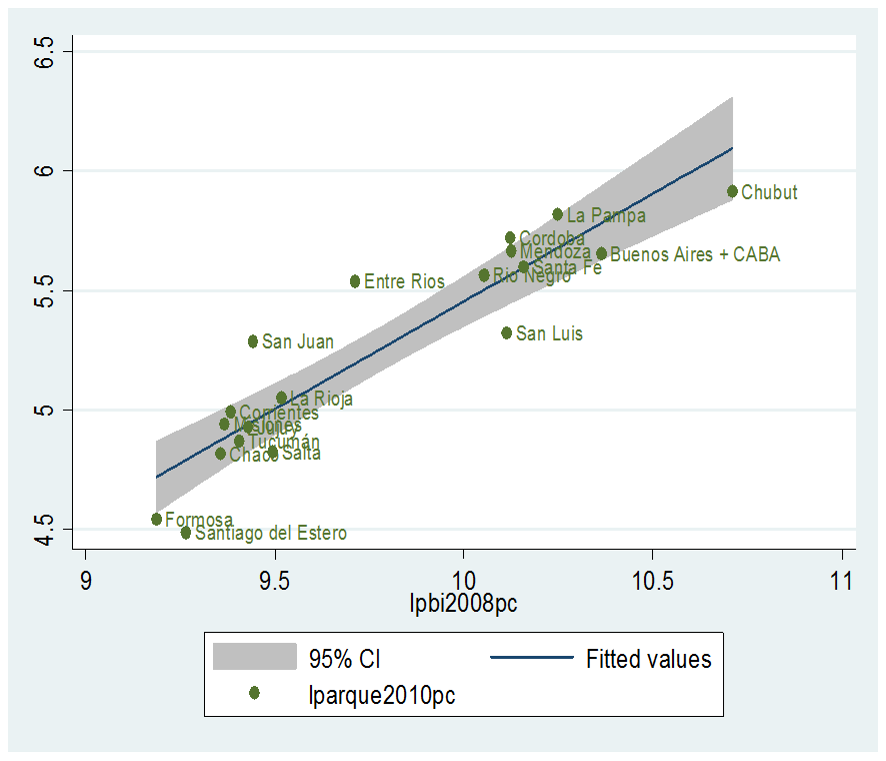

En el caso de la matriz OD de vinos los datos de producción provinieron del Instituto Nacional de Vitivinicultura (INV) con desagregación por departamento y por modalidad de envío (botella, tetra-brik y damajuana entre las principales).
La matriz distribuye 1,3 millones de toneladas, con una distancia media de 1.063 km con un total de transporte producido de 1.407 millones de toneladas-kilómetro.
En base a consultas a transportistas que trabajan con estos productos, se calcularon coeficientes de equivalencia para las toneladas reales transportadas bajo cada modalidad.
Tabla 4: Cantidades de vino transportadas, por modalidad de envío
| Modalidad de envío | Volumen | Factor de conversión a toneladas (1) | Toneladas | Factor de equivalencia | Toneladas equivalentes |
|---|---|---|---|---|---|
| hectolitros | ton / hectolitros | unidades | ton equiv / ton | unidades | |
| Botella | 4.941.025 | 0,089 | 439.751 | 2,05 | 901.482 |
| Tetra-Brik | 3.786.301 | 0,089 | 336.981 | 1,10 | 370.679 |
| Damajuana | 550.750 | 0,089 | 49.017 | 1,00 | 49.017 |
| Granel | 17.232 | 0,089 | 1.534 | 1,00 | 1.534 |
| TOTAL | 9.295.308 | 0,089 | 827.282 | 1,60 | 1.322.712 |
Los orígenes se zonificaron de acuerdo a los datos del INV y el consumo interno se distribuyó en forma proporcional a la población. Las exportaciones se distribuyeron en base a los países de destino reportados para 2010 por INDEC
Sin embargo, la asignación de pares origen-destino no se realizó minimizando las toneladas-kilómetro del sistema, sino que cada origen transporta a todos los destinos en forma proporcional a la población. Al tratarse de un producto altamente diferenciado, no se puede asumir que la distancia sea un factor muy relevante a la hora de determinar dónde se consumen los vinos producidos en cada ZT generadora, más bien debe asumirse que los consumidores demandarán cualquier variedad por igual.
Figura 26: Flujos de transporte de vinos, por origen
La matriz origen-destino de lácteos se subdivide en una matriz de leches fluidas y otra de productos derivados.
Tabla 5: Cantidades de productos lácteos transportados
| Producto | Litros | Conversión a toneladas* | Toneladas | Factor de equivalencia | Toneladas equivalentes | Toneladas-kilómetro | Distancia media |
|---|---|---|---|---|---|---|---|
| millones | ton / mill litros | unidades | ton equiv / ton | unidades | millones | km | |
| Leche | 1.711 | 1.032 | 1.765.752 | 1 | 1.765.745 | 595 | 337 |
| Derivados | 1.555.269 | 1 | 1.555.268 | 516 | 332 | ||
| TOTAL | 3.321.021 | 1 | 3.321.013 | 1.112 | 335 |
Los datos utilizados provienen de la Dirección de Información y Análisis Regional del Ministerio de Economía
Para elaboración de leches fluidas se destinan 1,74 millones de litros mientras que el resto se destina a la elaboración de productos derivados (quesos, leche en polvo, yogur, dulce de leche, manteca y otros) que totalizan 1,56 millones de toneladas.
Los litros producidos de leches fluidas se transforman a toneladas según la densidad del fluido que es un poco más pesado que el agua (1,032 ton/m3) lo que da 1,77 millones de toneladas.
Orígenes
Los orígenes se distribuyeron primero por provincia, utilizando datos del Censo Económico Nacional de 2004 que muestra que el 98% de la producción se concentra en 4 provincias y la Ciudad de Buenos Aires.
Tabla 6: Productos lácteos transportados, por origen provincial
| Producto | Leches fluidas | Derivados lácteos | Total | % del total |
|---|---|---|---|---|
| toneladas | toneladas | toneladas | % | |
| Buenos Aires | 769.305 | 681.373 | 1.450.678 | 44% |
| Santa Fe | 628.456 | 556.620 | 1.185.076 | 36% |
| Cordoba | 236.501 | 209.465 | 445.966 | 13% |
| CABA | 51.186 | 45.335 | 96.521 | 3% |
| Entre Rios | 23.071 | 20.433 | 43.504 | 1% |
| Otras | 57.226 | 42.042 | 99.268 | 3% |
| TOTAL | 1.765.745 | 1.555.268 | 3.321.013 | 100% |
Las provincias de Santa Fe y Córdoba luego se distribuyeron por departamento en base a datos del CEN
Tabla 7: Proporción de litros de leche fluida procesados por cuenca en la provincia de Buenos Aires
| Cuenca | % litros procesados |
|---|---|
| Abasto Sur | 36% |
| Abasto Norte | 16% |
| Oeste | 28% |
| Mar y Sierras | 3% |
| Fuera de Cuenca | 17% |
| Sur | 1% |
| TOTAL | 100% |
Luego se distribuyó el total de cada cuenca entre los departamentos que la componen según la cantidad de tambos presentes en el departamento hasta julio de 2008 según la Dirección de Producción Láctea de la Provincia de Buenos Aires. Una vez obtenidas las estimaciones de producción por departamento se procedió a zonificarlas en términos de las ZTs del modelo según el procedimiento usual.
En el caso de CABA la ZT que corresponde es “Buenos Aires”. Para el resto de las provincias (3% del total) se distribuyó por población.
Destinos
El consumo interno se distribuyó por población de la misma manera que se hizo con el consumo interno de otros productos alimenticios, mientras que la exportación de productos derivados de la leche se asignó en base a datos de aduana.
Figura 27: Flujos de transporte de productos lácteos, por origen provincial
Para confeccionar la matriz OD de cemento contamos con datos de consumo por provincia de la Asociación de Fabricantes de Cemento Portland, pero no de producción efectiva (a nivel de provincia o departamento). En su lugar utilizamos datos sobre la capacidad instalada de los polos cementeros, con importante concentración geográfica en el país, provistos por el sitio web de la International Cement Review
El cemento es mayormente un producto poco transable (si bien existe algo de exportación), con gran incidencia en su precio final del costo de transporte. Esto fundamenta la hipótesis de que los núcleos de consumo deben recurrir a las fuentes de mayor proximidad.
Los datos de consumo son entonces distribuidos entre los nodos de la red según su proporción de población en el total provincial. La mayor parte del cemento se utiliza para la construcción de obras civiles y edificios que están estrechamente relacionados con la cantidad de población de manera que el procedimiento da lugar a escasas distorsiones para este caso.
Nuestra hipótesis para asignar la producción de cemento a cada nodo no fue la de asignar en forma completamente proporcional a la capacidad instalada. Olavarría es el mayor nodo productor de cemento (posee la mitad de la capacidad instalada total) y por lo tanto el que cubre los faltantes de la producción en los radios de cobertura de las otras cementeras más pequeñas. Sin embargo no deberíamos observar demasiado transporte de cemento de Olavarría a localidades muy distantes siendo que existen cementeras mucho más cercanas.
Esto nos llevó a utilizar distintos factores de utilización de la capacidad instalada para cada cementera como forma de corregir en parte el excesivo transporte de cemento observado desde Olavarría hacia localidades lejanas.
Figura 28: Flujos de transporte de cemento, por origen
El uso medio de la capacidad instalada (que es de 20.4 millones de toneladas) dado que el consumo de cemento es de 10.2 millones de toneladas, es de aproximadamente el 50%. En la matriz no se tuvo en cuenta a las provincias de Tierra del Fuego, Santa Cruz y Chubut debido a que no incluimos en la red a las zonas más lejanas del sur ya que tienen un tráfico de escaso interés para el estudio. Esto hace que el uso medio de la capacidad instalada en nuestra matriz sea del 48%.
Los porcentajes de uso de la capacidad instalada que utilizamos para cada nodo productor fueron los siguientes:
Esto generó una distribución en la que cada cementera tiene un cierto radio de cobertura mientras que el nodo de Olavarría cubre el faltante en las localidades que no pueden completar su abastecimiento mediante la cementera local.
Existen casi 270 mil toneladas de exportación de cemento y unas 28 mil de importación (para el año 2010) que no están contabilizadas en esta matriz debido a la ausencia de datos para localizar geográficamente los flujos. Esto implica que la matriz subestima los flujos de transporte de cemento en alrededor de un 3%.
Los orígenes de la matriz OD de acero se basan en datos de la Cámara Argentina del Acero. Los destinos fueron construidos a partir de datos del Censo Económico Nacional (CEN) de 2004 y de la Matriz Insumo Producto (MIP) de 1997.
A partir de la MIP se establecieron las proporciones en que la industria del acero vende su producto a otros sectores. Luego con datos del CEN se hizo la distribución a nivel provincial de estas ventas de acero según la importancia que cada sector comprador de acero tiene en cada provincia.
Los productos de orden 102 (Hierro y acero comunes) y 103 (Productos laminados, estirados o doblados de hierro o acero) de la MIP son los elegidos como “industria del acero” mientras que los siguientes productos del CEN fueron los compradores de acero:
Además, un 29% de la producción de acero según la MIP se destina al sector de la construcción. En este caso se asignó esa producción al resto del país en forma proporcional a la población (siguiendo el criterio de distribución del cemento, cuyo destino principal es también la construcción).
De esta manera se cubren las ventas de acero a otros sectores, pero existe un flujo importante de ventas que es intrasectorial. Este fue tratado en forma separada y se basa en datos de origen y destino del estudio anterior (Müller 1994) actualizado por cantidades a 2010.
Figura 29: Flujos de transporte de productos de acero para terceros y para el propio sector, por orígenes
La matriz OD de automotores es de construcción más compleja que los productos a granel vistos hasta el momento. Este rubro aporta unas 4,3 millones de toneladas equivalentes a la red y 1.729 millones de toneladas kilómetro. La distancia media para esta matriz OD es de 401,3 km.
Se identificaron 10 firmas fabricantes y distribuidoras de automotores mientras que fueron agrupados en “TOTAL Distribuidores y Particulares” aquellos agentes que no intervienen en la fabricación sino solamente en la comercialización de automotores. Entre ellos están por ejemplo aquellos individuos que importan en forma directa.
Tabla 8: Firmas productoras de automotores
| Firma | Código nodo | Zona de tráfico |
|---|---|---|
| FORD ARGENTINA SCA | 1 | BUENOS AIRES |
| MERCEDES-BENZ ARGENTINA S.A. | 1 | BUENOS AIRES |
| PSA PEUGEOT-CITROEN S.A. | 1 | BUENOS AIRES |
| TOTAL Distribuidores y Particulares | 1 | BUENOS AIRES |
| VOLKSWAGEN ARGENTINA S.A. | 1 | BUENOS AIRES |
| TOYOTA ARGENTINA S.A. | 3 | ZARATE |
| GENERAL MOTORS ARGENTINA SRL | 21 | ROSARIO |
| FIAT AUTO ARGENTINA S.A. | 56 | CORDOBA |
| IVECO ARGENTINA S.A. | 56 | CORDOBA |
| RENAULT ARGENTINA S.A. | 56 | CORDOBA |
| SCANIA ARGENTINA S.A. | 83 | TUCUMAN |
Sobre la base de datos de ADEFA, se puede calcular la composición de la producción de cada firma según tipo de automotor (liviano, utilitario, pesado, etc) calculando a partir de allí un factor de equivalencia por firma. Las unidades producidas por cada firma se convierten a toneladas equivalentes mediante este coeficiente.
Tabla 9: Factores de equivalencia, por firma
| Firma | Factor de equivalencia |
|---|---|
| ton equiv / unidades | |
| FIAT AUTO ARGENTINA S.A. | 3 |
| FORD ARGENTINA SCA | 3,6 |
| GENERAL MOTORS ARGENTINA SRL | 3 |
| IVECO ARGENTINA S.A. | 15 |
| MERCEDES-BENZ ARGENTINA S.A. | 5,7 |
| PSA PEUGEOT-CITROEN S.A. | 3,1 |
| RENAULT ARGENTINA S.A. | 3,2 |
| TOYOTA ARGENTINA S.A. | 4,3 |
| VOLKSWAGEN ARGENTINA S.A. | 3,7 |
La importación proviene de datos de aduana; sin embargo, no se dispone de desagregación por firma, sino sólo del total por posición arancelaria. Se convierte el total en toneladas equivalentes según los coeficientes para cada clasificación de automotor.
Se asignó un 95% al nodo de Zárate (3) y un 5% al nodo de Paso de los Libres (71) siguiendo la misma distribución que se observa para la exportación de automotores bajo la idea de que el comercio exterior de este rubro se lleva adelante en terminales más especializadas que la carga común y por lo tanto al existir una fuerte concentración de la exportación en Zárate es esperable que estas terminales también sean las elegidas para operar con automotores en el comercio de importación.
Destinos
Los destinos se componen de la exportación y el consumo interno. Según datos de aduana similares a los utilizados para la importación, calculamos el total exportado de automotores en toneladas equivalentes. La distribución se hizo, como ya se dijo, en base a la misma fuente donde se observó que aproximadamente el 95% se despacha por el nodo de Zárate y el 5% por el nodo de Paso de los Libres.
No disponemos de las cantidades exportadas por firma, pero contamos con el dato del monto en dólares exportado por cada firma en el rubro. Utilizando la composición porcentual que surge de estos datos, asignamos los flujos de exportación a sus orígenes.
La distribución de los destinos del consumo interno fue la más compleja porque no se disponía de datos más que del monto global de ventas, y el criterio de distribución proporcional a la población no es adecuado en este caso ya que no se puede sostener que el consumo de automotores es similar en todas provincias. En principio es común asociar el consumo en este rubro con el poder adquisitivo, de manera que una posibilidad era asignar las ventas internas según el PBG per cápita de cada provincia y luego sí distribuir hacia el interior de cada una en forma proporcional a la población.
Para chequear esta posibilidad calculamos la elasticidad del parque automotor per cápita (datos de ADEFA para cada provincia) respecto del PBG per cápita del año 2008 (última estimación confiable de la que disponemos para todas las provincias) con una especificación econométrica logarítmica (log-log).
Tabla 10: Elasticidad del parque automotor per cápita al PBI per cápita
| VARIABLES | (1) lparque2010pc | (2) lparque2010pc | (3) lparque2010pc |
|---|---|---|---|
| lpbi2008pc | 0.661*** | 0.712*** | 0.903*** |
| (0.0840) | (0.0807) | (0.0927) | |
| Constant | -1.260 | -1.738** | -3.573*** |
| (0.827) | (0.805) | (0.913) | |
| Observations | 23 | 22 | 19 |
| R-squared | 0.717 | 0.819 | 0.839 |
| Robust standard errors in parentheses | |||
| *** p<0.01, ** p<0.05, * p<0.1 |
En la muestra completa para las 23 provincias (1) la eficiencia de la regresión fue de poco más del 70% y la elasticidad 0.661. Sin embargo existen provincias de muy alto producto per cápita relacionado con actividades extractivas que distorsionan el análisis al generar ingresos que no participandel circuito de consumo del cual depende la capacidad de adquirir unidades automotores de una población.
En (2) excluimos primero la provincia minera de Catamarca obteniendo 10 puntos más de eficiencia en la regresión y una elasticidad mayor (0.712). En (3) excluimos las provincias de Catamarca, Santa Cruz, Tierra del Fuego y Neuquén consiguiendo una eficiencia algo mayor y la elasticidad resultante fue de 0.903.
Figura 30: Relación entre parque automotor provincial per cápita y PBI per cápita
Esta última elasticidad fue la que utilizamos para estimar la cantidad de unidades compradas por habitante en cada provincia para determinada cantidad de unidades totales vendidas en el país y utilizando la población del censo 2010.
Ajustes
Tanto los orígenes como los destinos fueron estimados con datos independientes entre sí, de manera que fue necesario realizar un ajuste para compatibilizar el monto total de toneladas equivalentes originadas con el monto total de toneladas equivalentes en los destinos. Además de la independencia de las fuentes de datos, debemos tener en cuenta las posibles distorsiones producidas por la conversión en todos los casos a toneladas equivalentes. Este cálculo dista de ser preciso y debe tomarse como una aproximación con el propósito de convertir la heterogeneidad de productos que se transportan en la Argentina en una misma unidad de medida. Aún incluso dentro del sector automotor, las unidades que se producen tienen características muy distintas entre sí y la conversión a toneladas equivalentes puede introducir algunas distorsiones.
Por el lado de los orígenes, la conversión de toneladas a toneladas equivalentes arrojó un volumen de alrededor de 4 millones de toneladas.
Tabla 11: Producción e importación de automotores, por origen
| Código nodo | Zona de tráfico | Producción local | Importación | Total Origen |
|---|---|---|---|---|
| ton equiv | ton equiv | ton equiv | ||
| 3 | ZARATE | 330.402 | 1.491.603 | 1.822.005 |
| 1 | BUENOS AIRES | 1.269.514 | 1.269.514 | |
| 56 | CORDOBA | 716.145 | 716.145 | |
| 21 | ROSARIO | 423.477 | 423.477 | |
| 71 | PASO DE LOS LIBRES | 78.505 | 78.505 | |
| TOTAL | 2.739.538 | 1.570.108 | 4.309.646 |
Por el lado de los destinos el total resultó sumar unos 4,5 millones de toneladas equivalentes. Es decir un excedente de alrededor del 12%. Esta diferencia obligó a hacer un ajuste tanto en orígenes como en destinos de alrededor del 6% en cada caso para compatibilizar los resultados dado que no tenemos razones para creer que uno de los dos haya sido sobreestimado o subestimado y por lo tanto asignar el ajuste sólo de un lado.
Figura 31: Flujos de transporte de cargas de automotores
La matriz OD de combustibles reúne más de 20 millones de toneladas equivalentes e incluye gasoil, nafta, fuel oil y aerokerosene.
Tabla 12: Cantidades de combustibles transportados, por tipo de combustible
| Combustible | Producción | Importación | Total | Toneladas-kilómetro | Distancia media |
|---|---|---|---|---|---|
| ton equiv | ton equiv | ton equiv | millones | km | |
| Gasoil | 10.097.528 | 2.444.807 | 12.542.335 | 5.692 | 454 |
| Nafta | 4.182.151 | 95.366 | 4.277.517 | 2.051 | 480 |
| Fuel Oil | 2.803.692 | 27.390 | 2.831.082 | 670 | 237 |
| Aerokerosene | 1.146.265 | 1.146.265 | 344 | 300 | |
| TOTAL | 18.229.636 | 2.567.563 | 20.797.199 | 8.757 | 421 |
Orígenes
Los orígenes de la matriz de combustibles son poco más de 17 refinerías más los nodos de importación. La localización de las refinerías fue provista por la Secretaría de Energía (SE) para poder luego ser zonificadas. Los datos de producción provienen de las tablas SESCO de la SE.
Tabla 13: Orígenes de la producción de combustibles, por refinería
| Refinería o importación | Zona de tráfico | Producción o importación | % del total |
|---|---|---|---|
| ton equiv | % | ||
| La Plata | CHASCOMUS | 5.963.808 | 29% |
| Luján de Cuyo | MENDOZA | 3.712.227 | 18% |
| Dock Sud | BUENOS AIRES | 3.019.159 | 15% |
| Campana | ZARATE | 2.674.107 | 13% |
| IMPORTACIÓN | 2.562.889 | 12% | |
| San Lorenzo | ROSARIO | 1.000.692 | 5% |
| Elicâbe | BAHIA BLANCA | 930.676 | 4% |
| Plaza Huincul | ZAPALA | 492.912 | 2% |
| Campo Duran | TARTAGAL | 365.154 | 2% |
| Campana-ENARSA | ZARATE | 24.618 | 0% |
| Plaza Huincul-NAO | ZAPALA | 15.567 | 0% |
| Luján de Cuyo (Polipet.) | MENDOZA | 13.512 | 0% |
| Pet.Argentina-Neuquen | ZAPALA | 8.632 | 0% |
| Dock Sud-DAPSA | BUENOS AIRES | 5.216 | 0% |
| FOX-NEUQUEN | BAHIA BLANCA | 5.110 | 0% |
| Gral.Rodriguez - GRASTA | ZARATE | 1.352 | 0% |
| NEUQUEN - Ref.Neuquina | ZAPALA | 881 | 0% |
| Otras | 689 | 0% | |
| TOTAL | 20.797.199 | 100% |
Debe aclararse que, en rigor, la distribución de combustibles se hace desde otros puntos de almacenamiento conectados a las refinerías por cañerías. En su mayoría, sin embargo, estos pertenecen a las mismas zonas de tráfico que sus respectivas refinerías (no están muy lejos de ellas), de manera que la distinción se hace innecesaria.
La importación presentó algunas complicaciones adicionales. Los datos de la SE no incluían las importaciones de gasoil realizadas por CAMMESA (sólo incluían las del resto de los operadores) y por lo tanto hubo que suplir el dato con un ajuste. Al comparar orígenes con destinos se asignó la fuerte discrepancia observada entre las ventas al mercado interno de gasoil y la oferta total del mismo (producción más importación) al dato de importación faltante
La importación aparente que surge de comparar orígenes con destinos es de 2.444.807 toneladas. La información de la SE muestra que se importan unas 1.219.594 toneladas de gasoil de manera que 1.225.214 es lo que asumimos como dato faltante de la importación de CAMMESA.
Destinos
Se consideraron 4 tipos de destinos para la producción (e importación según el caso) de combustibles: estaciones de servicios, centrales térmicas, aeropuertos y exportaciones.
Tabla 14: Destinos de la producción e importación de combustibles, por tipo de destino
| Combustible | Estaciones de servicio | Centrales térmicas | Aeropuertos | Exportación | TOTAL sin ajuste |
|---|---|---|---|---|---|
| toneladas | toneladas | toneladas | toneladas | toneladas | |
| Gasoil | 11.801.337 | 1.384.204 | 13.185.541 | ||
| Nafta | 4.587.335 | - | 10.180 | 4.597.514 | |
| Fuel oil | - | 2.258.560 | 594.175 | 2.852.735 | |
| Aerokerosene | - | 1.146.265 | 1.146.265 | ||
| TOTAL | 16.388.671 | 3.642.764 | 1.146.265 | 604.355 | 21.782.055 |
Las estaciones de servicios provienen de una base de datos de la Secretaría de Energía que compila los volúmenes y precios de combustibles vendidos para cada año en cada una de las estaciones del país (casi 1200). La base tiene problemas conocidos de recopilación (especialmente respecto de los volúmenes, que es la variable relevante para el estudio); se detectaron unos 7 valores extremos de volúmenes de venta para un determinado producto y estación de servicio que fueron reemplazados por el promedio de ventas de las otras estaciones de servicio de la localidad. Las dos localidades donde se encontraron estos problemas fueron Las Varillas (Córdoba) y San Luis (San Luis).
Aun así, el valor final de m3 vendidos de combustibles resultó ser demasiado alto (controlado por datos de INDEC
Tabla 15: Ajuste del cálculo de consumo de combustible por discrepancias en orígenes y destinos, por tipo de combustible
| Combustible | TOTAL sin ajuste | Factor de ajuste | TOTAL con ajuste |
|---|---|---|---|
| toneladas | coeficiente | toneladas | |
| Gasoil | 13.185.541 | 0,95 | 12.542.335 |
| Nafta | 4.597.514 | 0,93 | 4.277.517 |
| Fuel oil | 2.852.735 | 0,99 | 2.831.082 |
| Aerokerosene | 1.146.265 | 1,00 | 1.146.265 |
| TOTAL | 21.782.055 | 0,95 | 20.797.199 |
El consumo de combustibles hecho por centrales térmicas proviene de los informes mensuales de CAMMESA sobre el sector. La localización de las centrales en el informe se realizó en base a un documento enviado por la SE con todas las centrales geo-referenciadas.
Por último la exportación es el destino menos relevante. Por la zona de Buenos Aires se exportan algunas naftas y fuel oil mientras que por la zona de Bahía Blanca sólo se exporta fuel oil. A falta de otros datos para distribuir las exportaciones de fuel oil entre Buenos Aires y Bahía Blanca, se asignaron proporcionalmente a la producción que registra cada zona del combustible en cuestión.
Figura 32: Flujos de transporte de combustibles, por origen
Los colores clasifican los flujos de transporte por el origen de la carga.
Los productos de los cuales se pudo recabar información para este sector no son muy representativos. La cadena de valor de los productos químicos y petroquímicos es muy compleja y tanto sus orígenes como sus destinos son muy específicos en los casos en que hay transportes de importancia.
La mayor parte de los productos relevantes pudo ser localizada y dimensionada “en origen” pero la dificultad apareció al intentar dilucidar hacia donde se transportan aquellos productos que no se reutilizan en la misma planta.
De los 5 productos que se pudieron incorporar al modelo, los dos más importantes se utilizan para fertilización agrícola (urea y tiosulfato de amonio). Los destinos de estos productos se distribuyeron en forma proporcional a la producción de granos de cada Zona de Tráfico en el modelo.
En el caso del metanol, el PET y el polipropileno la información de los pares origen-destino provino directamente de entrevistas con referentes del sector.
Tabla 16: Productos de química y petroquímica transportados
| Producto | Toneladas | Toneladas-kilómetro | Distancia media |
|---|---|---|---|
| unidades | milllones | km | |
| Urea | 1.414.150 | 766,0 | 541,7 |
| Metanol | 320.072 | 376,5 | 1.176,4 |
| PET | 237.000 | 37,7 | 159,1 |
| Tiosulfato | 115.897 | 55,1 | 475,1 |
| Polipropileno | 108.000 | 116,7 | 1.080,1 |
| TOTAL | 2.195.119 | 1.351,9 | 615,9 |
La producción de urea se reparte entre la zona de Bahía Blanca (665 mil toneladas) y la de Zárate (128 mil). La importación de este producto en el modelo se asignó por completo a la ZT Buenos Aires (612 mil). En el caso del tiosulfato de amonio hay sólo una ZT que concentra su producción y es Zárate.
Figura 33: Flujos de transporte de fertilizantes, por origen
Por su parte el metanol tiene un solo par origen-destino (Neuquén-Rosario), el polipropileno va de la ZT Mendoza a la ZT Buenos Aires y el PET tiene dos pares (Zárate-Buenos Aires y Buenos Aires-Sur).
Como dijimos, este estudio se basa a su vez en la encuesta de cargas de 1982 que fue realizada por la Secretaría de Transporte (Müller 1994). Esta encuesta fue posteriormente actualizada a 1986, a 1994 (para el estudio de referencia) y finalmente a 2010, en todos los casos en base a información secundaria.
Hay 22 productos cuyas matrices origen-destino se toman de este estudio.
Tabla 17: Productos provenientes del estudio anterior actualizado a 2010
| Producto | Toneladas | Toneladas-kilómetro | Distancia media |
|---|---|---|---|
| Unidades | Millones | Km | |
| PIEDRA Y CANTO RODADO | 1.537.289 | 653,5 | 425,1 |
| DURAZNO, CIRUELA, DAMASCO Y UVA PARA MESA | 726.777 | 662,5 | 911,6 |
| CAL | 472.429 | 343,7 | 727,5 |
| OTRAS HORTALIZAS Y VERDURAS | 442.310 | 584,8 | 1.322,2 |
| PREMOLDEADO PARA LA CONSTRUCCION, ARTICULOS DE FIBROCEMENTO Y HORMIGON COMPRIMIDO , CAÑOS, VIGAS PREMOLDEADAS | 192.426 | 60,6 | 314,8 |
| PLASTICOS INDUSTRIALES Y TERMOREDUCTIBLES | 158.017 | 110,9 | 701,7 |
| SAL | 120.697 | 53,1 | 439,6 |
| REPUESTOS DE MAQUINARIAS Y EQUIPOS | 110.855 | 30,1 | 271,8 |
| TOMATE, AJI Y PIMIENTOS | 110.578 | 170,0 | 1.537,1 |
| SANDIA, ZAPALLO Y MELON | 110.374 | 46,8 | 424,2 |
| MADERA TERCIADA | 103.409 | 77,9 | 753,5 |
| FIBRA DE ALGODON | 98.258 | 83,1 | 845,9 |
| PAPEL, CARTON, CARTULINA | 93.416 | 96,0 | 1.027,4 |
| CARBON MINERAL Y LEÑA | 53.217 | 57,9 | 1.088,7 |
| ANANA, BANANA Y OTRAS FRUTAS TROPICALES | 43.529 | 56,7 | 1.302,1 |
| CERAMICA ROJA Y LADRILLOS | 43.520 | 10,9 | 250,8 |
| MADERA SIN ELABORAR | 39.185 | 12,7 | 323,0 |
| CELULOSA | 34.426 | 11,0 | 320,7 |
| ALIMENTOS BALANCEADOS | 32.930 | 17,8 | 541,0 |
| GANADO CABALLAR | 32.627 | 11,2 | 342,0 |
| OTROS PRODUCTOS DE ORIGEN ANIMAL | 31.024 | 16,7 | 539,7 |
| AGREGADOS PARA LA CONSTRUCCION (INC. GRANITO TRITURADO, BASALTO, TOSCA, CUARCITA, LECA MARMOLITA, ETC.) | 29.186 | 21,7 | 744,9 |
| TOTAL | 4.616.479 | 3.189,6 | 690,9 |
La mitad de las toneladas están destinadas a la Ciudad Autónoma de Buenos Aires (19.9 millones).
Figura 34: Flujos de transporte de productos tomados del estudio anterior, por destino provincial
Todos los productos descriptos en los apartados anteriores configuran la matriz origen-destino de flujos de transporte relevados para este estudio. El cartograma de estos flujos arroja un gráfico como el siguiente para la red vial de transporte de cargas en Argentina.
Figura 35: Flujos de transporte totales sobre la red vial
La matriz origen-destino de las cargas relevadas en el estudio reúne finalmente unas 228,5 millones de toneladas que se desplazan unos 370 km en promedio. Esto significa que el volumen de tráfico total alcanza los 84.625 millones de toneladas-kilómetro.
Tabla 18: Parámetros de la matriz origen-destino de cargas relevadas, según tipo de tráfico
| Tipo de tráfico relevado | Toneladas equivalentes | Toneladas-kilómetro | Distancia media |
|---|---|---|---|
| unidades | milllones | km | |
| Extrazona | 163.447.770 | 80.068 | 490 |
| Intrazona | 65.094.147 | 4.557 | 70 |
| Total | 228.541.917 | 84.625 | 370 |
Dentro de la matriz OD, se contabilizan 65 millones de toneladas que sólo se desplazan dentro de la zona de tráfico donde se originan. Para este tipo de carga no se cuenta con una estimación de distancia específica a cada para OD sino que se adoptó como parámetro una distancia de 70 km para todos aquellos pares origen-destino intrazonales.
Estos pares OD intrazonales constituyen un 28,5% del total de las toneladas equivalentes de la matriz pero sólo un 5,4% del total de toneladas-kilómetro. Es interesante destacar que, si excluimos los pares OD intrazonales de la matriz, la distancia media del resto del tráfico relevado asciende a 490 km.